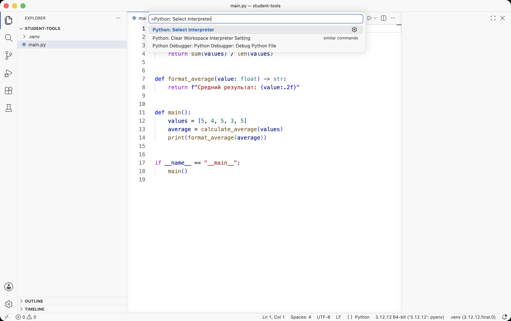
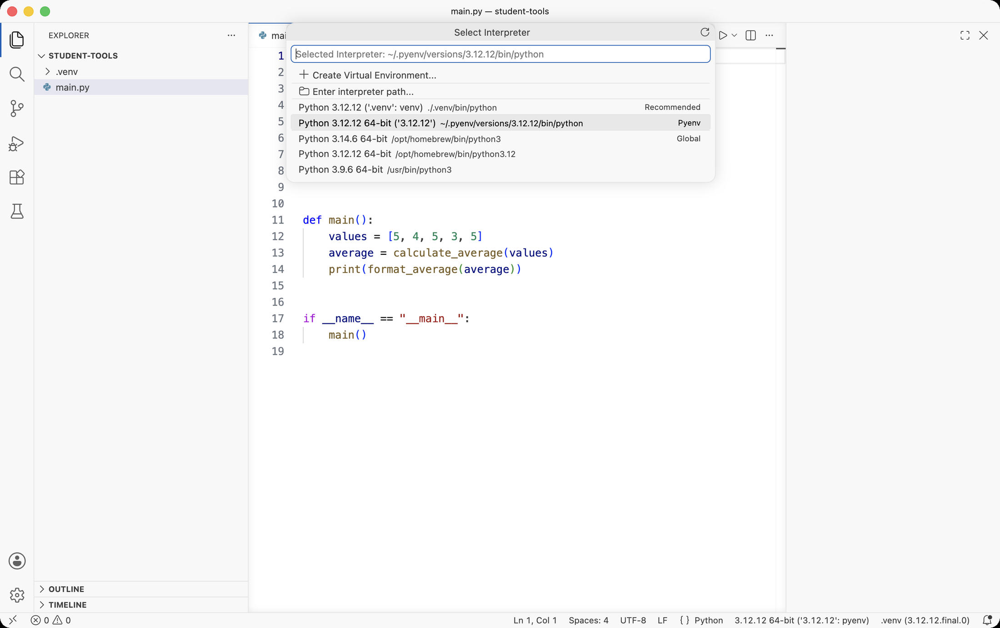
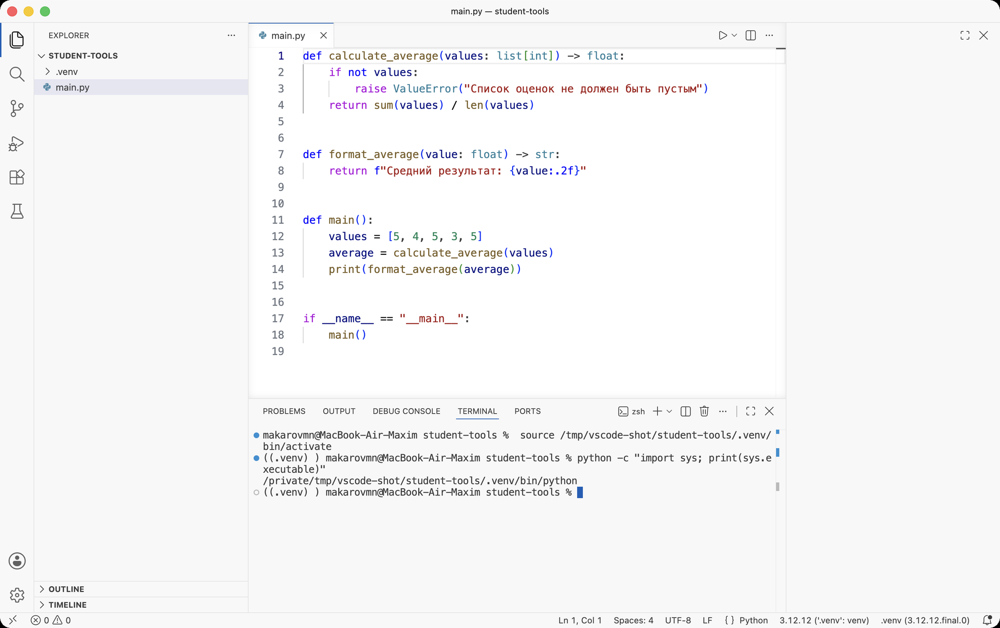

VS Code должен видеть тот же PythonGo
Связываем редактор и терминал с окружением. Запускаем первую версию программы.
Ставим расширение Go и языковой сервер. Запускаем первую версию программы.
Редактор и терминал — два места выбора
- Где
- Открытая папка student-tools в VS Code.
- Действие
- Палитра команд → Python: Select Interpreter → Python из .venv.
- Результат
- VS Code использует интерпретатор проекта для Python-файлов.
- Проверка
- Откройте новый терминал и отдельно выполните sys.executable; сравните пути.
Вы можете установить библиотеку в одном окружении, а запустить файл другим Python. Тогда установка проходит успешно, но программа не видит пакет. Поэтому отдельно проверяем интерпретатор редактора и интерпретатор терминала.
В Extensions найдите официальное расширение Python от Microsoft. Интерфейс Python Environments помогает управлять окружениями. Названия и расположение элементов могут отличаться между версиями VS Code; надёжный ориентир — команды палитры.
- Откройте палитру команд. Ctrl + Shift + P на Windows/Linux или Cmd + Shift + P на macOS.
- Введите Python: Select Interpreter. Выберите путь с
student-tools/.venv. Если его нет, укажите файл интерпретатора вручную через Enter interpreter path. - Откройте новый терминал. Проверьте путь командой ниже; если окружение не активировалось автоматически, выполните активацию из предыдущей главы.
python -c "import sys; print(sys.executable)"
Палитра открывается по Cmd + Shift + P (Windows/Linux: Ctrl + Shift + P). Знак > в начале строки означает режим команд. Достаточно начать вводить название — список сам сокращается до нужной команды.
Нажмите на изображение, чтобы увеличить.
В списке видно несколько Python сразу. Нужная строка — та, где путь начинается с ./.venv: это окружение открытой папки, VS Code помечает его как Recommended. Остальные строки (Pyenv, Global, /usr/bin/python3) — Python вне проекта. У вас набор строк будет другим, ориентируйтесь на .venv.
Нажмите на изображение, чтобы увеличить.
Справа внизу в строке состояния появился выбранный интерпретатор — 3.12.12 (.venv: venv). Новый терминал VS Code открыл уже с активацией: сверху видно строку source .venv/bin/activate, а слева от приглашения — префикс (.venv). Проверка sys.executable печатает путь внутрь .venv проекта. Это то самое совпадение, которого мы добиваемся.
Нажмите на изображение, чтобы увеличить.> Python: Select Interpreter③ Выберите путь, содержащий .venv.
python -c "import sys; print(sys.executable)"Как создать файл и сохранить изменения
В Explorer нажмите правой кнопкой на папку назначения → New File → введите имя целиком, включая .py. Вставьте код и сохраните: Ctrl+S на Windows/Linux или Cmd+S на macOS. Точка на вкладке файла обычно означает несохранённые изменения.
Другой способ создать окружение
Если вы уже создали .venv в главе 2.1, этот шаг пропустите. Для нового проекта можно открыть Python: Create Environment → Venv и выбрать установленный Python. Это альтернативный способ выполнить ту же подготовку, а не второе обязательное окружение.
В интерфейсе Python Environments есть создание окружения и управление пакетами. После мастера всё равно выполните проверку sys.executable: графический интерфейс не заменяет понимания, какой Python запускается.
Первая программа: всё в одном файле
- Где
- Редактор: student-tools/main.py. Терминал: student-tools/.
- Действие
- Откройте файл, сверяйте код ниже, сохраните и выполните python main.py.
- Результат
- Терминал выводит Средний результат: 4.40.
- Проверка
- Измените values на [5, 5, 5], сохраните и запустите: ожидается 5.00. Затем верните исходный список.
Откройте main.py из стартового архива. Пока программа небольшая, один файл — удобное решение. Вычисление, подготовка строки и запуск уже разделены функциями: позже это поможет разнести их по модулям.
def calculate_average(values: list[int]) -> float:
if not values:
raise ValueError("Список оценок не должен быть пустым")
return sum(values) / len(values)
def format_average(value: float) -> str:
return f"Средний результат: {value:.2f}"
def main():
values = [5, 4, 5, 3, 5]
average = calculate_average(values)
print(format_average(average))
if __name__ == "__main__":
main()calculate_average получает список оценок и возвращает число. format_average превращает число в строку с двумя знаками после точки. main задаёт данные и соединяет шаги. Аннотации list[int] и float описывают ожидаемые типы, но сами по себе не проверяют входные данные.
python main.pyСредний результат: 4.40Сумма оценок — 22, количество — 5, средняя — 4.4. Формат :.2f добавляет второй знак после точки. Пустой список вызывает ValueError, потому что у пустого набора нет средней оценки.
Редактор и терминал — одна установка Go
- Где
- Открытая папка student-tools в VS Code.
- Действие
- Extensions → расширение Go от Google → палитра команд → Go: Install/Update Tools.
- Результат
- Редактор подсказывает имена, находит ошибки до запуска и форматирует файл при сохранении.
- Проверка
- В новом терминале выполните обе команды ниже: обе должны отработать без ошибок.
В Go нет выбора интерпретатора: программа собирается одной установленной командой go, и она же обслуживает все проекты. Зато редактору нужен отдельный набор инструментов — прежде всего языковой сервер gopls. Без него подсказки и переход к определению работать не будут, хотя go run в терминале отработает как обычно.
В Extensions найдите официальное расширение Go (автор — Go Team at Google). После установки VS Code сам предложит доустановить инструменты; если предложение не появилось, вызовите команду палитры вручную. Названия и расположение элементов могут отличаться между версиями VS Code; надёжный ориентир — команды палитры.
- Откройте палитру команд. Ctrl + Shift + P на Windows/Linux или Cmd + Shift + P на macOS.
- Введите Go: Install/Update Tools. Отметьте
gopls(а заодноdlvдля отладки) и подтвердите. Установка идёт в отдельном окне Output. - Откройте новый терминал. Проверьте, что редактор и терминал работают с одним и тем же Go, командами ниже.
go version
go env GOROOT GOMODGOROOT — папка, где установлен сам Go; GOMOD — путь к go.mod текущего проекта. В строке состояния VS Code расширение Go тоже показывает версию языка; она должна совпадать с выводом go version. Если версии разные, у вас установлено два Go, и в PATH первым оказался не тот — уберите лишний.
> Go: Install/Update Tools③ Отметьте gopls и подтвердите.
go run .Как создать файл и сохранить изменения
В Explorer нажмите правой кнопкой на папку назначения → New File → введите имя целиком, включая .go. Вставьте код и сохраните: Ctrl+S на Windows/Linux или Cmd+S на macOS. При сохранении расширение Go автоматически применит gofmt: отступы и переносы изменятся сами — это нормально, у Go один принятый стиль форматирования.
Если редактор подчёркивает рабочий код
Самая частая причина — открыта не та папка. Расширение Go считает проектом ту папку, в корне которой лежит go.mod. Если открыть уровнем выше, редактор сообщит no required module provides package или gopls was not able to find modules in your workspace, хотя go run . из правильной папки соберёт программу без замечаний.
Проверьте: в Explorer виден go.mod прямо в корне дерева, а не внутри вложенной папки. Если нет — File → Open Folder и выберите папку проекта. После этого вызовите Go: Restart Language Server из палитры: gopls перечитает модуль, и подчёркивания исчезнут.
Вторая частая причина — файл сохранён с расширением .go.txt или лежит вне модуля. Такой файл расширение не анализирует: имя файла в Go значимо не меньше его содержимого.
Первая программа: всё в одном файле
- Где
- Редактор: student-tools/main.go. Терминал: student-tools/.
- Действие
- Откройте файл, сверяйте код ниже, сохраните и выполните go run .
- Результат
- Терминал выводит Средний результат: 4.40.
- Проверка
- Измените values на []int{5, 5, 5}, сохраните и запустите: ожидается 5.00. Затем верните исходный список.
Откройте main.go из стартового архива. Пока программа небольшая, один файл — удобное решение. Вычисление, подготовка строки и запуск уже разделены функциями: позже это поможет разнести их по пакетам.
package main
import (
"fmt"
"errors"
)
func calculateAverage(values []int) (float64, error) {
if len(values) == 0 {
return 0, errors.New("список оценок не должен быть пустым")
}
sum := 0
for _, value := range values {
sum += value
}
return float64(sum) / float64(len(values)), nil
}
func formatAverage(value float64) string {
return fmt.Sprintf("Средний результат: %.2f", value)
}
func main() {
values := []int{5, 4, 5, 3, 5}
average, err := calculateAverage(values)
if err != nil {
fmt.Println("Ошибка:", err)
return
}
fmt.Println(formatAverage(average))
}calculateAverage получает срез оценок и возвращает два значения: число и ошибку. Это главное отличие от Python: вместо исключения функция честно возвращает error, а вызывающий обязан его проверить — строка if err != nil и есть та проверка. formatAverage превращает число в строку с двумя знаками после точки. main задаёт данные и соединяет шаги.
Ещё три детали, которых нет в Python. package main в первой строке означает «это исполняемая программа», и точкой входа служит функция main — отдельной защиты вроде if __name__ == "__main__" не требуется. Типы указываются обязательно и проверяются компилятором: передать в calculateAverage строку не получится. А деление float64(sum) / float64(len(values)) требует явного преобразования: целое на целое в Go делится нацело, и без float64 вместо 4.4 вышло бы 4.
go run .Средний результат: 4.40Сумма оценок — 22, количество — 5, средняя — 4.4. Формат %.2f оставляет два знака после точки. Пустой срез даёт ошибку: у пустого набора нет средней оценки.
Проверьте себя · Почему редактор ругается, а go run . работает?
Сборку выполняет команда go из терминала, а подсказки — языковой сервер gopls внутри редактора. Они читают один код, но у gopls своё представление о границах проекта: если открыта не та папка или сервер не перезапускался после правки go.mod, подчёркивания остаются при полностью рабочем коде. Команда Go: Restart Language Server решает это в большинстве случаев.
Проверьте себя · Почему запуск кнопкой и запуск в терминале могут вести себя по-разному?
Редактор мог выбрать другой интерпретатор или другую рабочую папку. Проверьте Python: Select Interpreter, sys.executable и путь текущего терминала. В этом уроке команды запуска выполняем из корня student-tools.
Документация к теме
VS Code: Go · gopls · Go: первая программа · Go: обработка ошибок
Python: venv · Python: модули и пакеты · VS Code: Python environments · pip freeze